Nokia 6500 Slide

Nhắc đến các sản phầm điện thoại nắp trượt Nokia ta không thể bỏ qua Nokia 6500 Slide.Nếu đàn anh 6500 Classic mang phong cách cổ điển, quý phái thì Nokia 6500 Slide lại khoác lên mình phong hiện đại và bóng bẩy. Với bỏ ngoài và các phím chức năng của máy được làm bằng chất liệu thép không gỉ thay vì nhôm, nên dòng sản phẩm Nokia 6500 Slide mang vẻ ngoài mạnh mẽ và vô cùng sành điệu. Chiếc điện thoại mang lại cho người dùng cảm giác cầm rất chắc tay mặc dù chỉ cầm chỉ vừa đủ trong lòng bàn tay. Tuy chiếc điện thoại nắp trượt Nokia 6500 Slide này không còn nhiều trên thị trường, không còn được những nhà phân phối lớn uy tín như FPTShop phân phối nhưng nó vẫn còn được một số shop sưu tầm lại hàng cũ để bán cho những người hoài cổ đam mê điện thoại nắp trượt cũ.

Mobiistar Touch Bean 402c(thời điểm ra Dec 19, 2013)
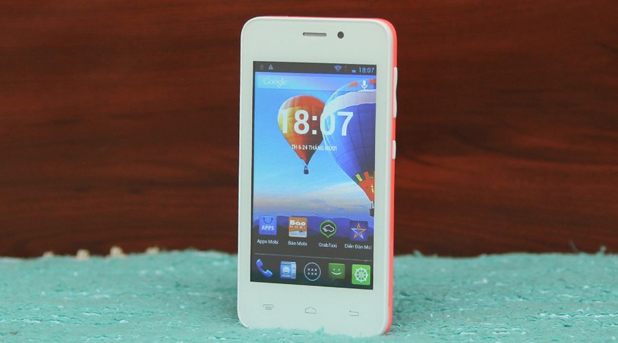Mang đến sức sống và yêu thương là thông điệp mà chiếc Mobiistar Touch Bean 402c muốn gửi tới người dùng. Mobiistar Touch Bean 402c nhắn gửi rằng nếu bạn vẫn đang là một FA thì đây là chiếc smartphone dành riêng cho bạn để bạn có thể hoàn toàn tự tin và sẵn sàng đón nhận yêu thương giải thoát “kiếp FA” của mình.
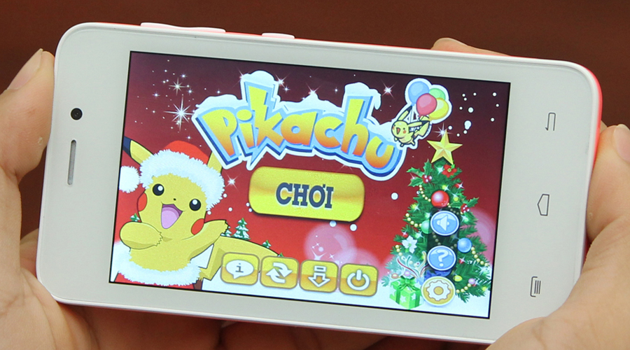1. Đón nhận yêu thương với camera chuyên “tự sướng”
Nếu bạn đang không hài lòng với bức ảnh đại diện của mình trên trang cá nhân ở các trang mạng xã hội trong khi bạn tiêu tốn rất nhiều thời gian của mình cho chúng. Hàng ngày trên các trang mạng xã hội đó là rất nhiều bạn bè cũng như mọi người xung quanh đang theo dõi từng bước. Vậy tại sao bạn lại không khoe những khoảnh khắc đáng yêu nhất của mình? Mobiistar Touch Bean 402c có một giải pháp dành cho bạn để làm mới mình. Bạn hãy dùng camera trước của Bean 402c để tự mình sở hữu những khoảnh khắc đáng yêu, xinh xắn hay đẹp trai nhất để cùng chia sẻ với tất cả mọi người. Camera 2.0 MP sẽ giúp bạn thực hiện điều này một cách đầy ấn tượng và thu hút mọi ánh nhìn.
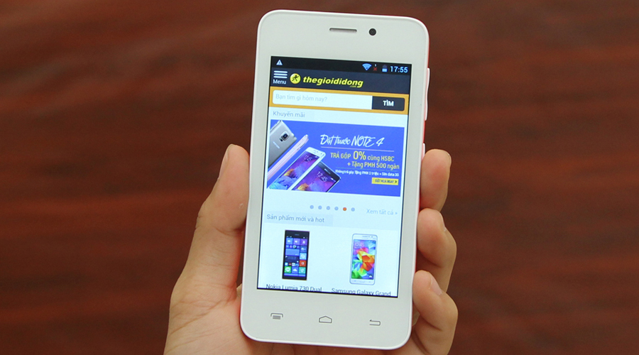2. Gây ấn tượng với bộ sưu tập 7 sắc màu yêu thương
Mang đến sức sống, sự trẻ trung năng động và tràn ngập yêu thương là điều mà Mobiistar Touch Bean 402c sẽ giúp bạn. Bạn sẽ không cần mất thời gian đắn đo suy nghĩ hay phải biểu cảm như thế nào trong những lần hẹn hò nữa. Mobiistar Touch Bean 402c sẽ luôn đồng hành cùng bạn, giúp bạn trở nên phon cách, cá tính và thời trang để có thể hoàn toàn tự tin vào bản thân mình để có được những kê hoạch mới, những mối quan hệ mới. Bạn có thể lựa chọn một trong 7 màu sắc để tìm mà phù hợp với mình nhất.
.jpg)
3. Kết nối và giải phóng cuộc đời FA
Nếu bạn ngại ngùng trong những buổi gặp mặt mà chưa hề biết nhau thì hãy tạo cảm giác quen thuộc trước cho đối phương. Hãy cùng kết nối wifi, 3G để mở rộng kết nối, giao lưu và biết đâu những cú chạm lướt trên màn hình có thể đưa bạn tìm thấy nơi mà nửa kia đang chờ đợi bạn. Không dừng lại ở đó Mobiistar Touch Bean 402c còn chiếc điện thoại 2 SIM 2 sóng mang đến cho bạn nhiều tiện ích hơn nữa. Chia sẻ và kết nối trong khoảnh khắc cùng Mobiistar Touch Bean 402c.
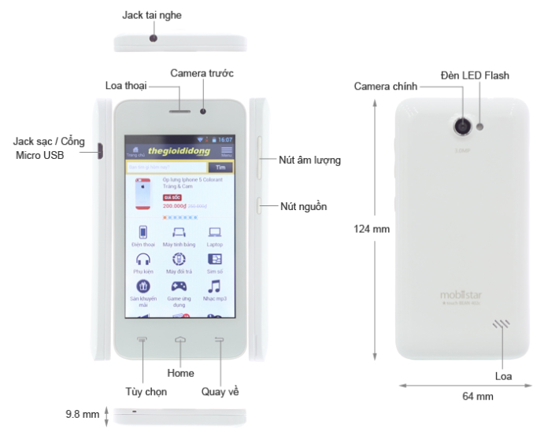4. Sẵn sàng đi tìm và đón nhận một nửa của mình
Bạn hãy cùng Mobiistar Touch Bean 402c refresh style của mình, hãy tự tin tạo ra những bức ảnh chụp selfie ấn tượng từ smartphone này và đừng ngại ngùng hãy chia sẻ cùng mọi người và biết đâu đấy có một nửa đang đợi bạn và theo dõi bạn qua những bức ảnh này. Hãy cùng gây ấn tượng và giải thoát cuộc đời FA bấy lâu của mình. Tự tin và chia sẻ cùng Mobiistar Touch Bean 402c . Bạn luôn có một chuyên gia tư vấn bên cạnh giải đáp mọi khúc mắc, băn khoăn là cuốn bách khoa toàn thư về tình yêu cũng như giải pháp chiếm được tình cảm và trái tim người ấy. Chỉ cần những cú chạm lướt thật nhẹ nhàng trên Google, trên các ứng dụng kết nối, những trang web ngọt ngào…bạn đã có thể ghi điểm trong mắt người ấy. Đừng rụt rè hãy tự tin vào chính bản thân mình cùng người bạn đồng hành điện thoại Mobiistar Touch Bean 402c này.
5. Sở hữu bí kíp giải thoát cuộc đời FA của bạn
Bạn sẽ được biết thêm thông tin chi tiết về bí kíp hết FA Mobiistar
Nokia X(21/9/2014)
Điện thoại được ra mắt bởi Stephen Elop tại 2014 Mobile World Congress ở Barcelona. Trái ngược với bản rò rỉ trước, hai biến thể, Nokia X và Nokia X+[5] đã được phát hành, với Nokia X+ có RAM 256 MB, trái ngược với RAM 64 mb như với thẻ nhớ microSD bao gồm trong hộp.
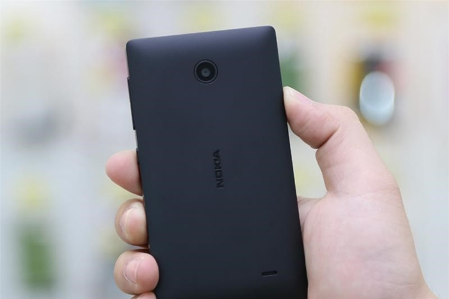 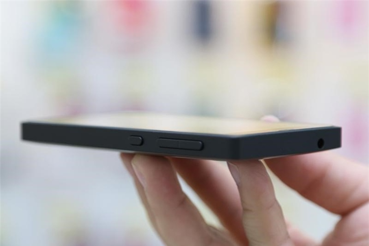 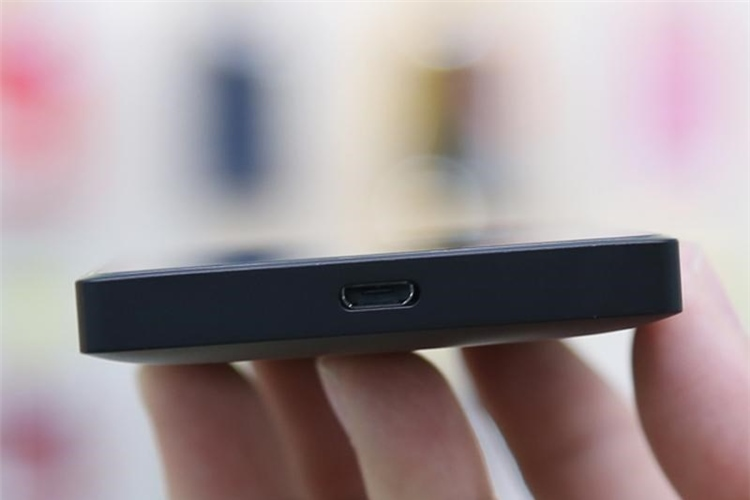Một điện thoại thứ ba, Nokia XL, được công bố, với màn hình lớn, máy ảnh trước, flash, và thời lượng pin dài hơn.
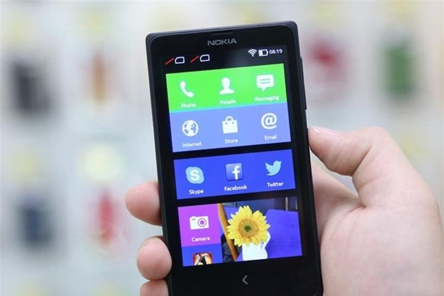 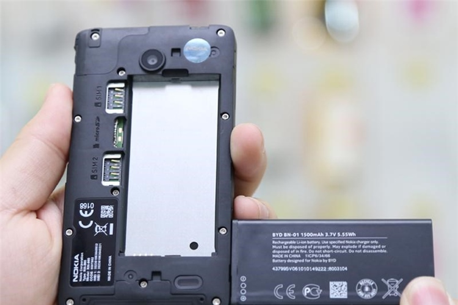 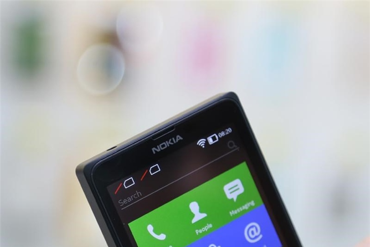Ngay sau khi phát hành, các lập trình viên đã root được thiết bị, và có thể cài thêm ứng dụng và dịch vụ của Google.
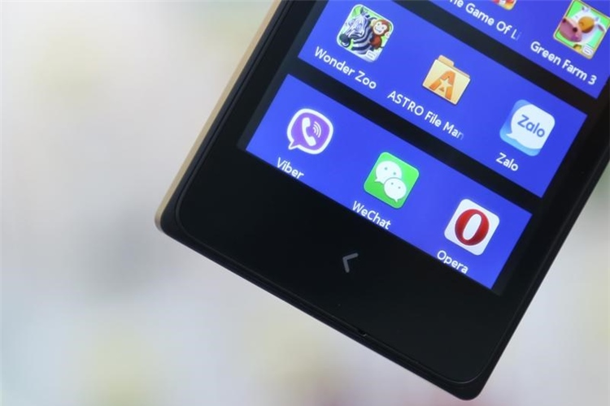 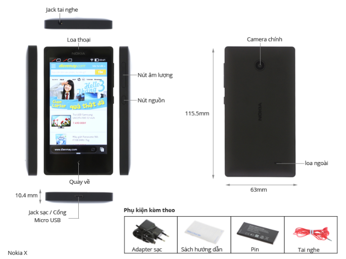Nokia chính thức phát hành Nokia X ở thị trường Ấn Độ với mức giá $140 (8599 đồng rupi Ấn Độ) vào 23 tháng 3 năm 2014.Airtel trong liên doanh với Nokia sẽ phát hành 'Nokia X' ở 17 quốc gia châu Phi từ giữa tháng 4 năm 2014.Ở Indonesia, Nokia X được phát hành với IDR 1,599,999 (USD 140).